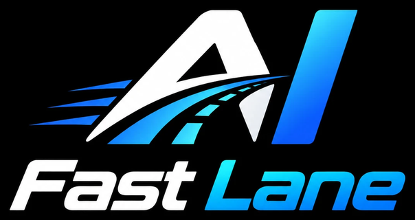

Submit an idea from Joint Product Discovery and get a first read on whether it can run through the AI Fast Lane, or should stay on the standard engineering track. This is a self-assessment — Engineering still confirms the final risk classification.